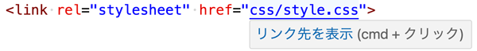
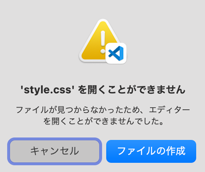

- link要素を記述（この段階でCSSを記述していなくてもOK）
- link要素を記述後、CSSファイルのパスを「Ctrl (cmd)」+ クリック


- ブラウザのデフォルトスタイル（初期値）を解除するためのCSSは「リセットCSS」と呼ばれ、世界中でいろいろな手法が試されています。
- 目的は、各ブラウザが持つ「ボックスモデルの値」を初期化すること
- 以下の例は、最小記述の resetCSS の例になります
余白をなくす
@charset "UTF-8";
* {
padding: 0;
margin: 0;
}
要素の幅と高さの計算方法を指定する
- box-sizing（要素の幅と高さをどのように計算するかを設定）
- content-box（初期値）
- border-box（paddingとborderを含めて幅のサイズとする）
@charset "UTF-8";
* {
padding: 0;
margin: 0;
box-sizing: border-box;
}
要素の幅と高さの計算方法
- CSSボックスモデルで定義している
- 初期値は、要素の大きさは「width / heightの値」＋「paddingの値」＋「borderの太さ」の値を足した数値で算出
border-box
- 初期値である「content-box」を「border-box」変更することにより、paddingとborderの値を含めずに「width / heightの値」のみで計算するようになる
リストの行頭スタイルを非表示にする
- 「ul」の行頭「●」を非表示にする
- 「list-style」は、「list-style-image」「list-style-position」「list-style-type」をまとめて指定
- 「li」を含めると「ol」指定時の「数字」が見えなくなります
ul {
list-style: none;;
}
リンクの文字色と下線の設定
- 文字色「inherit」は、親要素の文字色を継承する
- 下線の有無は、「text-decoration」で設定
a {
color: inherit;
text-decoration: none;
}
ベースになるスタイルを指定
- 文字色・文字サイズ・書体・行間を指定
- 背景色も指定
body {
color: #333;
background-color: #fff;
font-size: 16px;
font-family: sans-serif;
line-height: 1.0;
}
img要素の最大幅を指定する
- サイト制作の実務では、画像のサイズを２倍の大きさで用意するため、親要素内に収まるように指定します
- 「vertical-align: bottom;」文字の小文字の下部に当たる部分の空き（ディセンダ）をとる指定
img {
max-width: 100%;
vertical-align: bottom;
}

まとめ
- 初心者のサイト制作では、以下の最低限のリセットにとどめます
- 必要に応じて追加記述します
<html lang="ja">
<head>
<meta charset="UTF-8">
<meta name="viewport" content="width=device-width, initial-scale=1.0">
<title>Document</title>
<link rel="stylesheet" href="css/style.css">
</head>
<body>
<header class="header">
<h1>ページテーマの最優先見出し</h1>
<nav>
<ul>
<li><a href="#">リンク1</a></li>
<li><a href="#">リンク2</a></li>
<li><a href="#">リンク3</a></li>
</ul>
</nav>
</header>
<main class="main">
<div class="key-visual">
<img src="" alt="">
</div>
<section class="content">
<h2>章の最優先見出し</h2>
<p>段落</p>
<ul>
<li><a href="#">箇条書き</a></li>
<li><a href="#">箇条書き</a></li>
<li><a href="#">箇条書き</a></li>
</ul>
</section>
</main>
<footer class="footer">
<p><small>© 2025 Webデザイン</small></p>
</footer>
</body>
</html>
@charset "UTF-8";
* {
margin: 0;
padding: 0;
box-sizing: border-box;
}
ul {
list-style: none;
}
a {
color: inherit;
text-decoration: none;
}
img {
max-width: 100%;
vertical-align: bottom;
}
body {
background-color: #fff;
color: #333;
font-size: 16px;
font-family: sans-serif;
line-height: 1.0;
}
.header h1 {
color: #f00;
}
h2 {
padding: 30px;
margin-bottom: 20px;
background-color: #cdffee;
color: #00f;
}
疑似要素も加える
- ::beforeと::afterは疑似要素といい、対象の要素に擬似的に要素を追加するためのセレクタです。
- 疑似要素は、全称セレクタではカバーしきれない場合があるため、この2つのセレクタも追加しています。
@charset "UTF-8";
*,*::before,*::after {
padding: 0;
margin: 0;
}